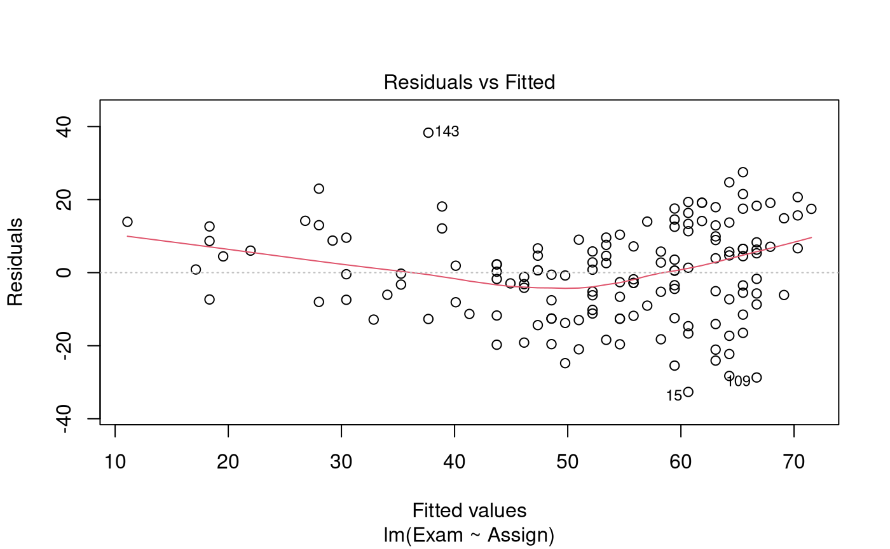
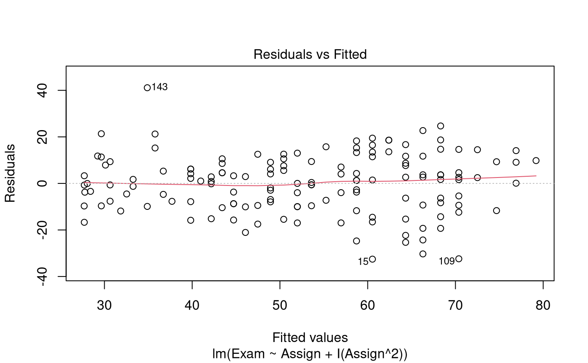
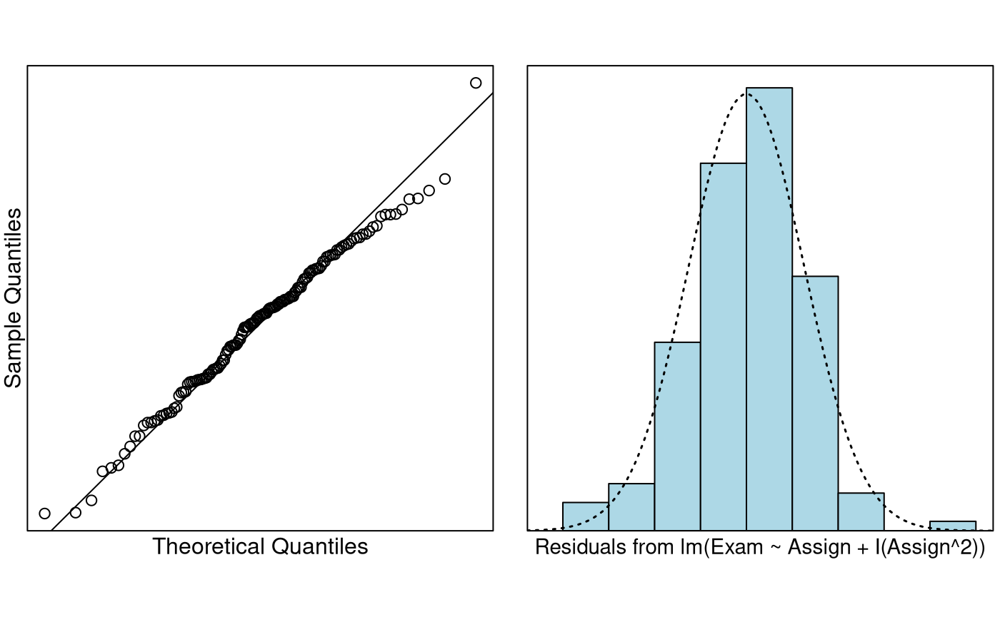

Problem
We wish to quantify the relationship between exam mark and assignment score. In particular, we want to estimate the typical exam mark for all students when the assignment marks are 0, 10, and 20.
The variables of interest are:
-
Exam: Exam mark out of 100. -
Assign: Assignment mark out of 20.
Question of Interest
We want to build a model to estimate exam marks with assignment marks. In particular, we want to estimate the typical exam mark for all students when the assignment marks are 0, 10, and 20.
Read in and Inspect the Data
Stats20x.df = read.table("STATS20x.txt", header = TRUE)
plot(Exam ~ Assign, data = Stats20x.df)We see an increasing relationship between assignment marks and exam marks. However, this relationship does not seem very strong, and there is some suggestion of curvature in the relationship. We’ll need to fit a linear model and scrutinise the residual plot to verify the extent of the curvature.
Model Building and Check Assumptions
examAssign.fit = lm(Exam ~ Assign, data = Stats20x.df)
plot(examAssign.fit, which = 1) # We can use this code as an alternative to eovcheck
examAssign.fit2 = lm(Exam ~ Assign + I(Assign^2), data = Stats20x.df)
plot(examAssign.fit2, which = 1)
normcheck(examAssign.fit2)
cooks20x(examAssign.fit2)
summary(examAssign.fit2)##
## Call:
## lm(formula = Exam ~ Assign + I(Assign^2), data = Stats20x.df)
##
## Residuals:
## Min 1Q Median 3Q Max
## -32.541 -9.149 1.273 9.087 41.116
##
## Coefficients:
## Estimate Std. Error t value Pr(>|t|)
## (Intercept) 28.41396 5.99081 4.743 5.05e-06 ***
## Assign -0.68172 1.07242 -0.636 0.525999
## I(Assign^2) 0.16102 0.04545 3.542 0.000536 ***
## ---
## Signif. codes: 0 '***' 0.001 '**' 0.01 '*' 0.05 '.' 0.1 ' ' 1
##
## Residual standard error: 12.65 on 143 degrees of freedom
## Multiple R-squared: 0.5477, Adjusted R-squared: 0.5414
## F-statistic: 86.59 on 2 and 143 DF, p-value: < 2.2e-16
confint(examAssign.fit2)## 2.5 % 97.5 %
## (Intercept) 16.57197462 40.2559372
## Assign -2.80156333 1.4381240
## I(Assign^2) 0.07117039 0.2508643Get additional Confidence Intervals
Note, since we are after typical exam marks we have to use confidence intervals rather than prediction intervals.
predAssign.df = data.frame(Assign = c(0, 10, 20))
predict(examAssign.fit2, predAssign.df, interval = "confidence")## fit lwr upr
## 1 28.41396 16.57197 40.25594
## 2 37.69849 34.29319 41.10379
## 3 79.18650 73.61953 84.75346Method and Assumption Checks
The scatter plot of exam mark vs assignment mark suggested curvature in the relationship.
We began with a linear model to describe exam marks with assignment marks. The residual plot from the fit of a simple linear model showed fairly constant scatter but had strong curvature. So, a quadratic term was added to the linear model.
All model assumptions look satisfied once we added the quadratic term to the linear model.
Our final model is where .
Our model explained 55% of the variability in the students’ final exam marks.
Executive Summary
We were interested in building a model to estimate exam marks with assignment marks.
The relationship between expected exam mark and assignment score was modelled as quadratic.
Here, for a one mark increase in assignment score, the increase in expected exam score was greater as assignment score increased. For example, there was little difference in expected exam score for those getting 7 or 8 in assignments, but a much bigger difference for those getting 17 or 18.
For assignment marks of 0, 10 and 20, the estimate expected exam marks were between 16.6 to 40.3, 34.3 to 41.1, and 73.6 to 84.8, respectively.